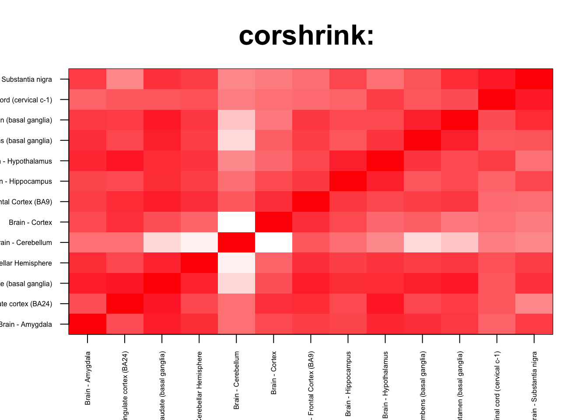

Last updated: 2017-05-19
Code version: 262d6b2
In this script, we try to perform some gene set enrichment analysis of the CountClust clusters with respect to the CorShrink patterns observed.
cor_result <- get(load("../output/ash_cor_only_gtex_tissues.rda"))
common_samples <- get(load("../output/common_samples.rda"))
tissue_labels <- read.table(file = "../data/GTEX_V6/samples_id.txt")[,3]
#library(data.table)
#data <- data.frame(fread("../data/GTEX_V6/cis_gene_expression.txt"))
#matdata <- t(data[,-c(1,2)])
gene_names <- as.character(read.table(file = "../data/GTEX_V6/gene_names_GTEX_V6.txt")[,1])
gene_names_1 <- as.character(sapply(gene_names, function(x) return(strsplit(x, "[.]")[[1]][1])))
U <- unique(tissue_labels)tab <- array(0, dim(cor_result)[3])
for(m in 1:dim(cor_result)[3]){
z <- as.matrix(cor_result[order_index[1:13],order_index[1:13],m])
vec_z <- z[row(z) > col(z)]
tab[m] <- length(which(vec_z > 0.3))
}
col=c(rev(rgb(seq(1,0,length=1000),1,seq(1,0,length=1000))),
rgb(1,seq(1,0,length=1000),seq(1,0,length=1000)))
image(as.matrix(cor_result[order_index[1:13],order_index[1:13],which.max(tab)]),
col=col, main=paste0("corshrink: "), cex.main=2,
xaxt = "n", yaxt = "n", zlim=c(-1,1))
axis(1, at = seq(0, 1, length.out = 13), labels = U[order_index[1:13]], las=2, cex.axis = 0.5)
axis(2, at = seq(0, 1, length.out = 13), labels = U[order_index[1:13]], las=2, cex.axis = 0.5)
col=c(rev(rgb(seq(1,0,length=1000),1,seq(1,0,length=1000))),
rgb(1,seq(1,0,length=1000),seq(1,0,length=1000)))
image(as.matrix(cor_result[order_index[1:13],order_index[1:13],which.min(tab)]),
col=col, main=paste0("corshrink: "), cex.main=2,
xaxt = "n", yaxt = "n", zlim=c(-1,1))
axis(1, at = seq(0, 1, length.out = 13), labels = U[order_index[1:13]], las=2, cex.axis = 0.5)
axis(2, at = seq(0, 1, length.out = 13), labels = U[order_index[1:13]], las=2, cex.axis = 0.5)tval <- (tab - mean(tab))/sd(tab)
names(tval) <- gene_names_1
cluster_list <- vector(mode = "list", length = 6)
for(l in 1:6){
cluster_list[[l]] <- as.character(read.table(paste0("../utilities/gene_names_brain_clus_", l, ".txt"))[,1])
}
library(fgsea)
out <- fgsea(pathways = cluster_list,
stats = tval,
nperm = 100000)
out pval padj ES NES nMoreExtreme size
1: 1.365020e-05 4.103855e-05 0.6534141 2.572201 0 101
2: 4.665638e-02 6.998458e-02 0.3456568 1.360698 3417 101
3: 1.739142e-01 1.739142e-01 0.2990933 1.185213 12817 106
4: 6.286245e-02 7.543494e-02 -0.2815261 -1.272054 1690 100
5: 3.717472e-05 7.434944e-05 -0.7138533 -3.225492 0 100
6: 1.367952e-05 4.103855e-05 0.5400921 2.122322 0 100
leadingEdge
1: ENSG00000106211,ENSG00000099860,ENSG00000124762,ENSG00000125148,ENSG00000132002,ENSG00000134531,
2: ENSG00000143153,ENSG00000125814,ENSG00000165943,ENSG00000177432,ENSG00000084731,ENSG00000096384,
3: ENSG00000215908,ENSG00000183889,ENSG00000183889,ENSG00000134986,ENSG00000246859,ENSG00000175265,
4: ENSG00000242265,ENSG00000272678,ENSG00000050165,ENSG00000059758,ENSG00000072110,ENSG00000127585,
5: ENSG00000099194,ENSG00000140450,ENSG00000151552,ENSG00000164402,ENSG00000196187,ENSG00000012171,
6: ENSG00000140181,ENSG00000225972,ENSG00000047457,ENSG00000225630,ENSG00000237973,ENSG00000249119,col=c(rev(rgb(seq(1,0,length=1000),1,seq(1,0,length=1000))),
rgb(1,seq(1,0,length=1000),seq(1,0,length=1000)))
image(as.matrix(cor_result[order_index[1:13],order_index[1:13], grep("ENSG00000106211", gene_names_1)]),
col=col, main=paste0("corshrink: ENSG00000106211"), cex.main=2,
xaxt = "n", yaxt = "n", zlim=c(-1,1))
axis(1, at = seq(0, 1, length.out = 13), labels = U[order_index[1:13]], las=2, cex.axis = 1.5)
axis(2, at = seq(0, 1, length.out = 13), labels = U[order_index[1:13]], las=2, cex.axis = 1.5)
col=c(rev(rgb(seq(1,0,length=1000),1,seq(1,0,length=1000))),
rgb(1,seq(1,0,length=1000),seq(1,0,length=1000)))
image(as.matrix(cor_result[order_index[1:13],order_index[1:13], grep("ENSG00000099194", gene_names_1)]),
col=col, main=paste0("corshrink: ENSG00000099194"), cex.main=2,
xaxt = "n", yaxt = "n", zlim=c(-1,1))
axis(1, at = seq(0, 1, length.out = 13), labels = U[order_index[1:13]], las=2, cex.axis = 1.5)
axis(2, at = seq(0, 1, length.out = 13), labels = U[order_index[1:13]], las=2, cex.axis = 1.5)
tab <- array(0, dim(cor_result)[3])
for(m in 1:dim(cor_result)[3]){
z <- as.matrix(cor_result[order_index[1:13],order_index[1:13],m])
vec_z <- z[row(z) > col(z)]
tab[m] <- quantile(vec_z, 0.4)
}
tval <- (tab - mean(tab))/sd(tab)
names(tval) <- gene_names_1
out <- fgsea(pathways = cluster_list,
stats = tval,
nperm = 100000)
out pval padj ES NES nMoreExtreme size
1: 1.304172e-05 3.917830e-05 0.6815598 2.5392385 0 101
2: 9.661176e-01 9.661176e-01 0.1825037 0.6799408 74078 101
3: 7.598374e-01 9.118049e-01 0.2237805 0.8394639 58701 106
4: 4.268215e-05 6.402322e-05 -0.5228272 -2.3328517 0 100
5: 4.268215e-05 6.402322e-05 -0.6237657 -2.7832391 0 100
6: 1.305943e-05 3.917830e-05 0.5514387 2.0517413 0 100
leadingEdge
1: ENSG00000184557,ENSG00000124762,ENSG00000149257,ENSG00000099860,ENSG00000167772,ENSG00000173110,
2: ENSG00000143153,ENSG00000125814,ENSG00000096384,ENSG00000177432,ENSG00000165943,ENSG00000087152,
3: ENSG00000215908,ENSG00000183889,ENSG00000183889,ENSG00000134986,ENSG00000246859,ENSG00000175265,
4: ENSG00000062282,ENSG00000072110,ENSG00000103316,ENSG00000242265,ENSG00000088832,ENSG00000102780,
5: ENSG00000078269,ENSG00000104419,ENSG00000138593,ENSG00000099194,ENSG00000164124,ENSG00000118271,
6: ENSG00000047457,ENSG00000225972,ENSG00000173369,ENSG00000249119,ENSG00000090920,ENSG00000159189,cluster_list <- vector(mode = "list", length = 6)
for(l in 1:6){
cluster_list[[l]] <- as.character(read.table(paste0("../utilities/gene_names_brain_clus_", l, ".txt"))[,1])
}
brain_related_genes <- c();
for(l in 1:length(cluster_list)){
brain_related_genes <- c(brain_related_genes, cluster_list[[l]]);
}
brain_related_genes <- unique(brain_related_genes)
other_genes <- setdiff(gene_names_1, brain_related_genes)
cluster_list[[7]] <- sample(other_genes, 100, replace = FALSE)
pval_others <- array(0, 30)
for(num in 1:30){
out <- fgsea(pathways = cluster_list,
stats = tval,
nperm = 10000)
pval_others[num] <- out$padj[7]
cat("We are at iteration: ", num, "\n")
}We are at iteration: 1
We are at iteration: 2
We are at iteration: 3
We are at iteration: 4
We are at iteration: 5
We are at iteration: 6
We are at iteration: 7
We are at iteration: 8
We are at iteration: 9
We are at iteration: 10
We are at iteration: 11
We are at iteration: 12
We are at iteration: 13
We are at iteration: 14
We are at iteration: 15
We are at iteration: 16
We are at iteration: 17
We are at iteration: 18
We are at iteration: 19
We are at iteration: 20
We are at iteration: 21
We are at iteration: 22
We are at iteration: 23
We are at iteration: 24
We are at iteration: 25
We are at iteration: 26
We are at iteration: 27
We are at iteration: 28
We are at iteration: 29
We are at iteration: 30 out pval padj ES NES nMoreExtreme size
1: 0.0001291656 0.0004526057 0.6815598 2.5404840 0 101
2: 0.9657711186 0.9657711186 0.1825037 0.6802743 7476 101
3: 0.7572431398 0.9657711186 0.2237805 0.8415301 5932 106
4: 0.0004407228 0.0007712649 -0.5228272 -2.3407178 0 100
5: 0.0004407228 0.0007712649 -0.6237657 -2.7926238 0 100
6: 0.0001293159 0.0004526057 0.5514387 2.0527957 0 100
7: 0.9055993793 0.9657711186 0.1988786 0.7403491 7002 100
leadingEdge
1: ENSG00000184557,ENSG00000124762,ENSG00000149257,ENSG00000099860,ENSG00000167772,ENSG00000173110,
2: ENSG00000143153,ENSG00000125814,ENSG00000096384,ENSG00000177432,ENSG00000165943,ENSG00000087152,
3: ENSG00000215908,ENSG00000183889,ENSG00000183889,ENSG00000134986,ENSG00000246859,ENSG00000175265,
4: ENSG00000062282,ENSG00000072110,ENSG00000103316,ENSG00000242265,ENSG00000088832,ENSG00000102780,
5: ENSG00000078269,ENSG00000104419,ENSG00000138593,ENSG00000099194,ENSG00000164124,ENSG00000118271,
6: ENSG00000047457,ENSG00000225972,ENSG00000173369,ENSG00000249119,ENSG00000090920,ENSG00000159189,
7: ENSG00000266903,ENSG00000174807,ENSG00000108187,ENSG00000145386,ENSG00000261556,ENSG00000172115,plot(density(pval_others))
sessionInfo()R version 3.3.3 (2017-03-06)
Platform: x86_64-apple-darwin13.4.0 (64-bit)
Running under: macOS Sierra 10.12
locale:
[1] en_US.UTF-8/en_US.UTF-8/en_US.UTF-8/C/en_US.UTF-8/en_US.UTF-8
attached base packages:
[1] stats graphics grDevices utils datasets methods base
other attached packages:
[1] fgsea_1.1.2 Rcpp_0.12.10 softImpute_1.4 Matrix_1.2-8
[5] knitr_1.15.1 CorShrink_0.99.0 workflowr_0.4.0 rmarkdown_1.5
loaded via a namespace (and not attached):
[1] Biobase_2.34.0 httr_1.2.1
[3] jsonlite_1.4 splines_3.3.3
[5] foreach_1.4.3 gsubfn_0.6-6
[7] Formula_1.2-1 expm_0.999-2
[9] highr_0.6 stats4_3.3.3
[11] latticeExtra_0.6-28 Rsamtools_1.26.1
[13] yaml_2.1.14 RSQLite_1.1-2
[15] backports_1.0.5 lattice_0.20-35
[17] chron_2.3-50 digest_0.6.12
[19] GenomicRanges_1.26.1 RColorBrewer_1.1-2
[21] XVector_0.14.0 checkmate_1.8.2
[23] colorspace_1.3-2 htmltools_0.3.6
[25] plyr_1.8.4 XML_3.98-1.6
[27] biomaRt_2.30.0 zlibbioc_1.20.0
[29] corpcor_1.6.9 scales_0.4.1
[31] glasso_1.8 BiocParallel_1.8.2
[33] git2r_0.18.0 htmlTable_1.9
[35] tibble_1.3.1 sqldf_0.4-10
[37] IRanges_2.8.1 ggplot2_2.2.1
[39] SummarizedExperiment_1.4.0 GenomicFeatures_1.26.0
[41] ashr_2.0.5 nnet_7.3-12
[43] BiocGenerics_0.20.0 lazyeval_0.2.0
[45] proto_1.0.0 survival_2.41-3
[47] magrittr_1.5 memoise_1.1.0
[49] evaluate_0.10 doParallel_1.0.10
[51] MASS_7.3-45 foreign_0.8-67
[53] truncnorm_1.0-7 rsconnect_0.7
[55] tools_3.3.3 data.table_1.10.4
[57] REBayes_0.73 stringr_1.2.0
[59] S4Vectors_0.12.0 munsell_0.4.3
[61] cluster_2.0.6 AnnotationDbi_1.36.0
[63] Biostrings_2.42.0 GenomeInfoDb_1.10.1
[65] rlang_0.1.1.9000 grid_3.3.3
[67] RCurl_1.95-4.8 iterators_1.0.8
[69] htmlwidgets_0.8 bitops_1.0-6
[71] base64enc_0.1-3 gtable_0.2.0
[73] codetools_0.2-15 curl_2.6
[75] DBI_0.6-1 mygene_1.10.0
[77] reshape2_1.4.2.9000 R6_2.2.1
[79] GenomicAlignments_1.10.1 gridExtra_2.2.1
[81] rtracklayer_1.34.1 fastmatch_1.1-0
[83] Hmisc_4.0-2 rprojroot_1.2
[85] stringi_1.1.5 pscl_1.4.9
[87] parallel_3.3.3 SQUAREM_2016.8-2
[89] rpart_4.1-10 acepack_1.4.1 This R Markdown site was created with workflowr